Tutorial 4 - Métodos Não Supervisionados
Neste tutorial vamos aprender dois métodos de machine learning que servem para problemas de agrupamento. Neste tipo de problemas, não temos uma variável de saída conhecida, portanto não podemos usar os métodos supervisionados já conhecidos.
K-means
Vamos aprender inicialmente o método conhecido como ‘k-means’ que basicamente agrupa as observações por uma métrica de similaridade e distância e logo cria os grupos a partir da aproximação entre elas, ou seja, aquelas observações com distância pequena entre elas farão parte do mesmo grupo.

Carregando os pacotes:
library(devtools)
#install_github("thomasp85/patchwork")
#install.packages("skimr")
#install.packages('ggforce')
#install.packages("factoextra")
#install.packages("FactoMineR")library(tidyverse)
library(patchwork)
library(skimr)
library(ggforce)
library(factoextra)
library(FactoMineR)
theme_set(theme_minimal())minhascores <- c("#9b5de5","#f15bb5","#fee440","#00bbf9","#00f5d4","#264653","#2A9D8F","#E9C46A","#F4A261",
"#E76F51")Vamos usar o dataset ws_customers.rds
customers <- readRDS("data5/ws_customers.rds")
head(customers) Milk Grocery Frozen
1 11103 12469 902
2 2013 6550 909
3 1897 5234 417
4 1304 3643 3045
5 3199 6986 1455
6 4560 9965 934Vamos plotar os dados:
p1 <- customers %>%
ggplot(aes(Milk, Grocery))+
geom_point(size=2, color=minhascores[1])
p2 <- customers %>%
ggplot(aes(Milk, Frozen))+
geom_point(size=2, color=minhascores[2])
p3 <- customers %>%
ggplot(aes(Frozen, Grocery))+
geom_point(size=2, color=minhascores[5])
p1 + p2 + p3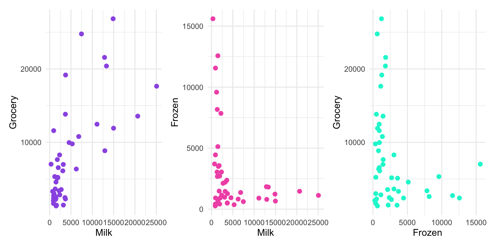
Podemos ver a estrutura dos dados utilizando a skim() do pacote skimr:
skim(customers)| Name | customers |
| Number of rows | 45 |
| Number of columns | 3 |
| _______________________ | |
| Column type frequency: | |
| numeric | 3 |
| ________________________ | |
| Group variables | None |
Variable type: numeric
| skim_variable | n_missing | complete_rate | mean | sd | p0 | p25 | p50 | p75 | p100 | hist |
|---|---|---|---|---|---|---|---|---|---|---|
| Milk | 0 | 1 | 4830.67 | 5684.39 | 333 | 1375 | 2335 | 5302 | 25071 | ▇▁▂▁▁ |
| Grocery | 0 | 1 | 7830.00 | 6620.53 | 1330 | 2743 | 5332 | 10790 | 26839 | ▇▃▂▁▁ |
| Frozen | 0 | 1 | 2869.60 | 3523.56 | 264 | 824 | 1455 | 3046 | 15601 | ▇▁▁▁▁ |
Agora podemos começar o tratamento dos dados.
customers_scaled <- scale(customers)Rodando o algoritmo k-means:
modelo <- kmeans(customers_scaled, centers = 3)modeloK-means clustering with 3 clusters of sizes 6, 10, 29
Cluster means:
Milk Grocery Frozen
1 -0.6300002 -0.5910651 2.2758422
2 1.5604900 1.4939883 -0.4815017
3 -0.4077551 -0.3928791 -0.3048288
Clustering vector:
[1] 2 3 3 3 3 3 3 3 2 3 3 2 2 2 3 3 2 1 3 2 3 3 2 3 3 3 2 3 3 3 3 3 3 3 1 3 3 2
[39] 3 1 3 3 1 1 1
Within cluster sum of squares by cluster:
[1] 3.983097 17.427349 14.052893
(between_SS / total_SS = 73.1 %)
Available components:
[1] "cluster" "centers" "totss" "withinss" "tot.withinss"
[6] "betweenss" "size" "iter" "ifault" pronto, o modelo foi construido, agora vamos incorporar uma coluna no nosso datafram customers_df com o resultado do cluster.
customers <- customers %>%
mutate(cluster = factor(modelo$cluster))
skim(customers)| Name | customers |
| Number of rows | 45 |
| Number of columns | 4 |
| _______________________ | |
| Column type frequency: | |
| factor | 1 |
| numeric | 3 |
| ________________________ | |
| Group variables | None |
Variable type: factor
| skim_variable | n_missing | complete_rate | ordered | n_unique | top_counts |
|---|---|---|---|---|---|
| cluster | 0 | 1 | FALSE | 3 | 3: 29, 2: 10, 1: 6 |
Variable type: numeric
| skim_variable | n_missing | complete_rate | mean | sd | p0 | p25 | p50 | p75 | p100 | hist |
|---|---|---|---|---|---|---|---|---|---|---|
| Milk | 0 | 1 | 4830.67 | 5684.39 | 333 | 1375 | 2335 | 5302 | 25071 | ▇▁▂▁▁ |
| Grocery | 0 | 1 | 7830.00 | 6620.53 | 1330 | 2743 | 5332 | 10790 | 26839 | ▇▃▂▁▁ |
| Frozen | 0 | 1 | 2869.60 | 3523.56 | 264 | 824 | 1455 | 3046 | 15601 | ▇▁▁▁▁ |
Vamos refazer os gráficos, só que agora vamos colorir os pontos pelo cluster a qual pertencem.
p1 <- customers %>%
ggplot(aes(Milk, Grocery, color=cluster))+
geom_point(size=2)+
scale_color_manual(values=minhascores)+
theme(legend.position = "none")
p2 <- customers %>%
ggplot(aes(Milk, Frozen, color=cluster))+
geom_point(size=2)+
scale_color_manual(values=minhascores)+
theme(legend.position = "none")
p3 <- customers %>%
ggplot(aes(Frozen, Grocery, color=cluster))+
geom_point(size=2)+
scale_color_manual(values=minhascores)+
theme(legend.position = "none")
p1+p2+p3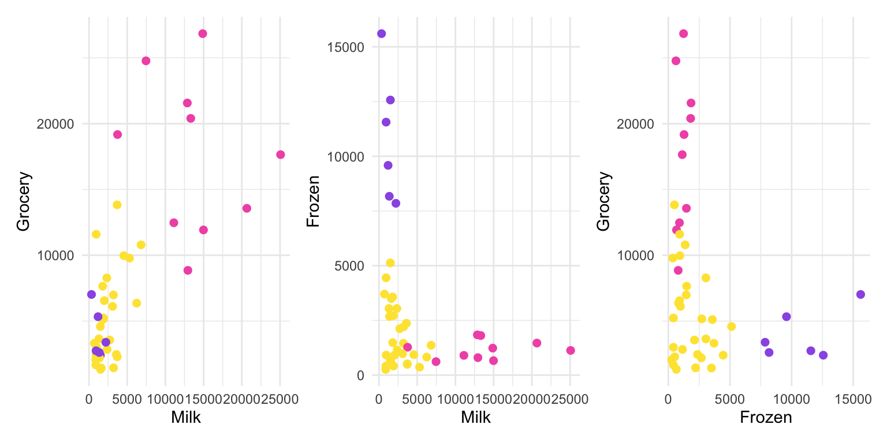
p1cluster <- p1 +
geom_mark_ellipse(aes(color=cluster))
p2cluster <- p2 +
geom_mark_ellipse(aes(color=cluster))
p3cluster <- p3 +
geom_mark_ellipse(aes(color=cluster))
p1cluster+p2cluster+p3cluster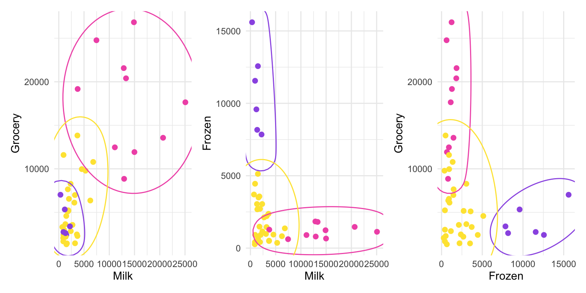
Escolhendo o número ideal de clusters
fviz_nbclust(customers, kmeans, method = "wss")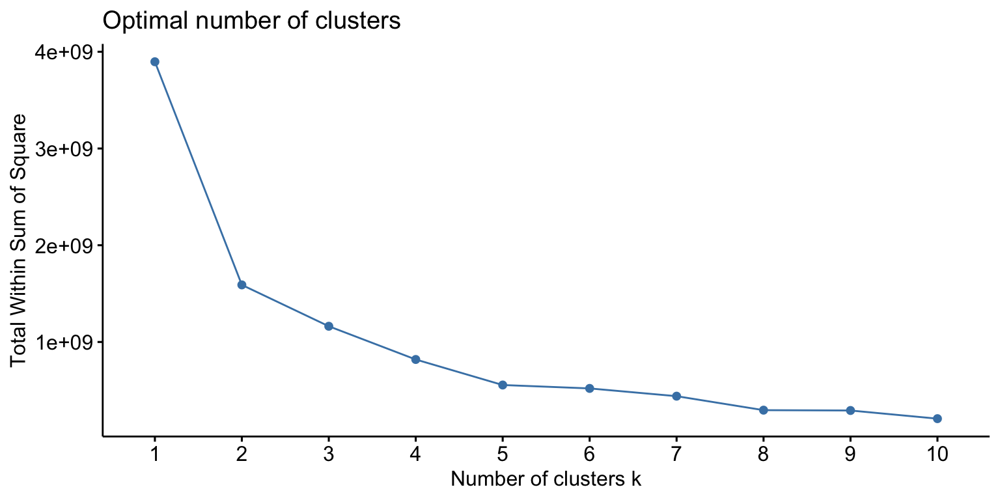
Escolhe-se o ponto onde o ‘cotovelo’ é mais visível, neste caso, 2 clusters.
modelo_final <- kmeans(customers_scaled, centers = 2)
customers <- customers %>%
mutate(cluster = factor(modelo_final$cluster))Vamos refazer os gráficos mais uma vez.
p1 <- customers %>%
ggplot(aes(Milk, Grocery, color=cluster))+
geom_point(size=2)+
scale_color_manual(values=minhascores)+
theme(legend.position = "none")
p2 <- customers %>%
ggplot(aes(Milk, Frozen, color=cluster))+
geom_point(size=2)+
scale_color_manual(values=minhascores)+
theme(legend.position = "none")
p3 <- customers %>%
ggplot(aes(Frozen, Grocery, color=cluster))+
geom_point(size=2)+
scale_color_manual(values=minhascores)+
theme(legend.position = "none")
p1cluster <- p1 +
geom_mark_ellipse(aes(color=cluster))
p2cluster <- p2 +
geom_mark_ellipse(aes(color=cluster))
p3cluster <- p3 +
geom_mark_ellipse(aes(color=cluster))
p1cluster+p2cluster+p3cluster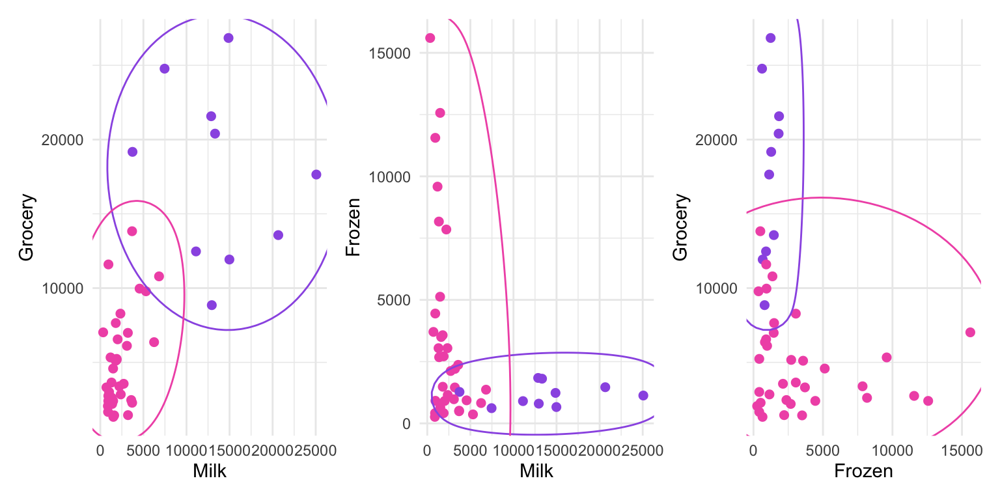
Uma melhor forma de gráficar é utilizar a redução de dimensionalidade.
modelo_final <- eclust(customers_scaled, "kmeans", k=2)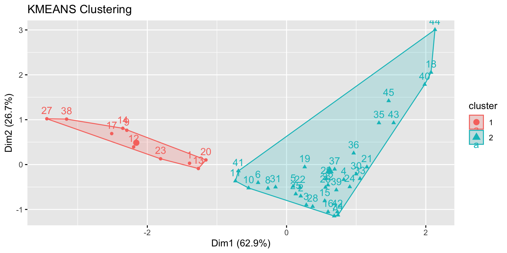
Cluster Hierárquico
A diferença com o método anterior é que para o cluster hierárquico não é necessário pré-definir o número de clusters, pois o método agrupa as observações de forma sequencial, facilitando a identificação do número ideal de cluster.

O ideal é que os dados estejam normalizados, pelo menos as colunas numéricas, pois este método aceita também colunas (atributos) categóricos.
Vamos usar a função eclust() do pacote factoextra.
modelo2 <- eclust(customers_scaled, "hclust")fviz_dend(modelo2)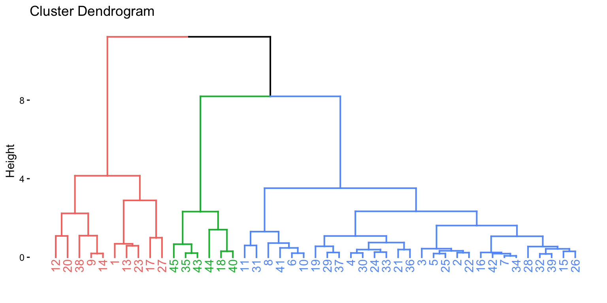
Análise dos Componentes Principais
A Análise de Componentes Principais (PCA, do inglês “Principal Component Analysis”) é uma técnica estatística usada para reduzir a dimensionalidade de um conjunto de dados, ao mesmo tempo em que preserva a maior quantidade possível de variação presente nesses dados. A PCA consegue isso transformando o conjunto original de variáveis em um novo conjunto de variáveis ortogonais (ou seja, não correlacionadas) chamadas de componentes principais. Esses componentes são ordenados de tal forma que o primeiro componente captura a maior parte da variação nos dados, o segundo componente captura a maior parte da variação restante, e assim por diante.
customers <- readRDS("data5/ws_customers.rds")
modelo_pca <- PCA(customers, graph = FALSE)Agora podemos aplicar vários tipos de visualizações do pacote factoExtra.
fviz_screeplot(modelo_pca, ncp=10)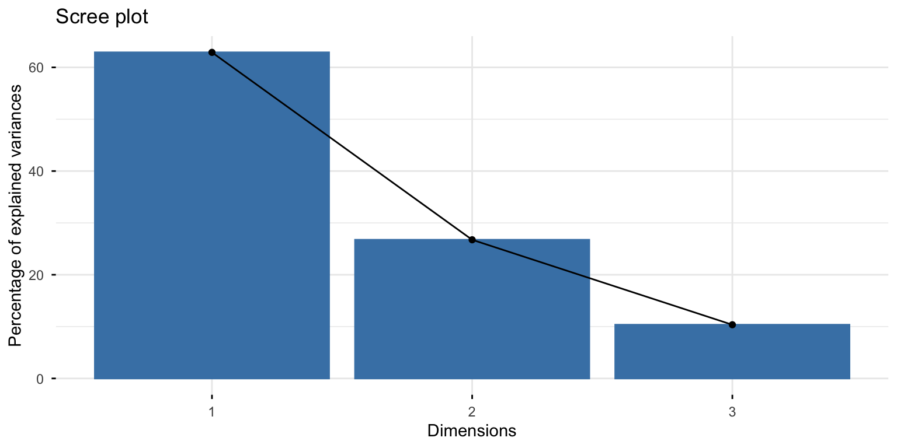
fviz_screeplot(modelo_pca, ncp=10,
barfill = minhascores[4],
barcolor = minhascores[4])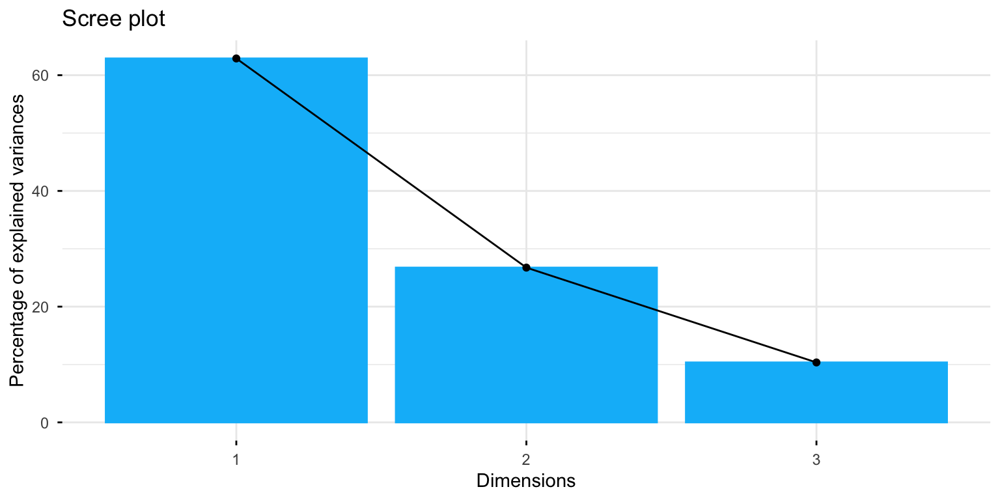
fviz_pca_var(modelo_pca)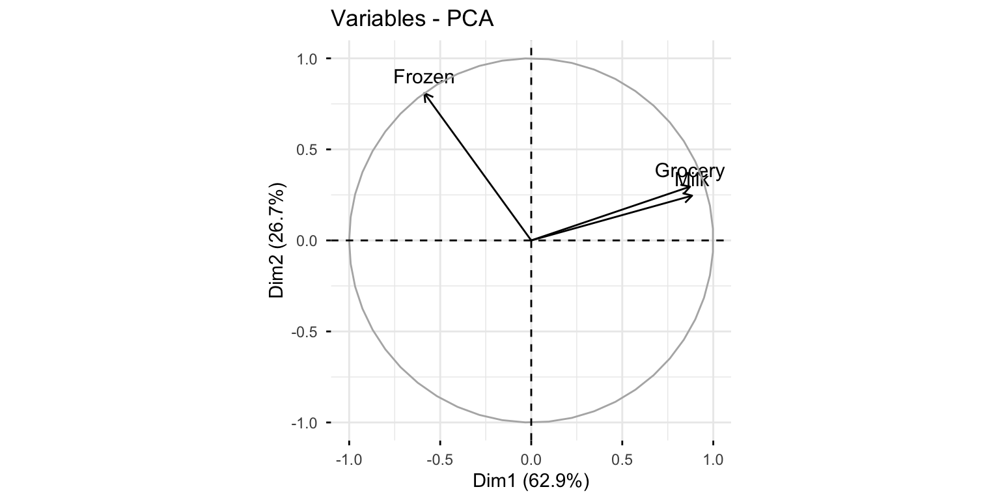
fviz_pca_var(modelo_pca,
col.var="contrib")+
scale_color_gradient2(low=minhascores[1],
mid=minhascores[2],
high=minhascores[3],
midpoint = 34)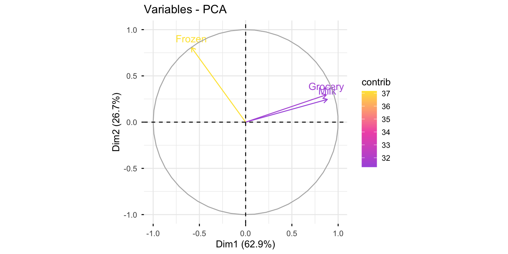
customers <- customers %>%
mutate(cluster=factor(modelo2$cluster))
fviz_pca_ind(modelo_pca,
label="none",
habillage = customers$cluster,
addEllipses = TRUE)+
scale_fill_manual(values = minhascores)+
scale_color_manual(values=minhascores)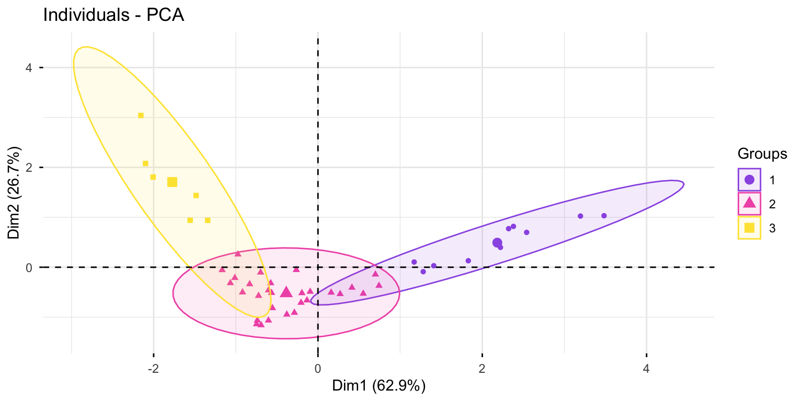
fviz_pca_biplot(modelo_pca,
label="var",
habillage = customers$cluster,
addEllipses = TRUE)+
scale_fill_manual(values = minhascores)+
scale_color_manual(values=minhascores)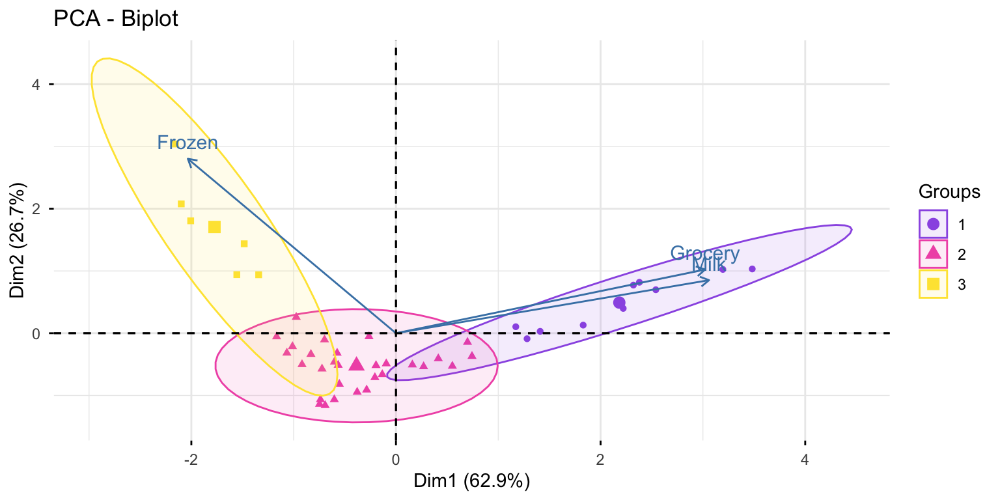